Genial! Has encontrado la bola
Ahora ya puedes montar el árbol. Ve a probarlo!
Enhorabuena! Has completado el juego! Nos has salvado la navidad!
Tienes que encontrar primero todas las piezas del árbol antes de poder verlo...
:
